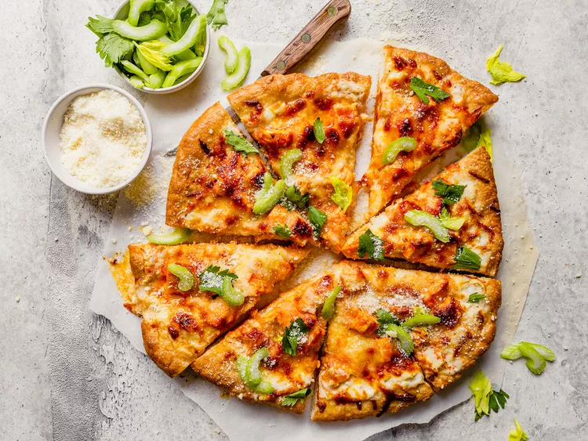

Buffalo-Style Chicken Pizza Recipe
Home

Description
This Buffalo chicken pizza is a delicious combination of two favorite foods: Buffalo chicken wings and pizza!
Ingredients
- 3 cooked chicken breasts, diced.
- 2 tablespoons butter, melted.
- 1 (8 ounce) bottle blue cheese salad dressing.
- 1 (16 inch) prepared pizza crust.
- 1 (8 ounce) package shredded mozzarella cheese.
Steps
- Gather the ingredients.
- Buffalo-Style Chicken Pizza ingredients on a marble counter.
- Preheat the oven to 425 degrees F (220 degrees C).
- Mix chicken, hot sauce, and melted butter in a bowl until well combined. Chicken, hot sauce, and melted butter in a bowl with a spoon.
- Place crust onto a rimmed baking sheet or pizza pan. Spread salad dressing over crust.
- Hand pouring blue cheese salad dressing on a pizza crust on a pizza pan.
- Top with chicken mixture and sprinkle with mozzarella.
- Uncooked Buffalo-Style Chicken Pizza with the cheese on top on a pizza pan.
- Bake in the preheated oven until crust is golden brown and cheese is bubbly, about 5 to 10 minutes.
- Let sit a few minutes before slicing.